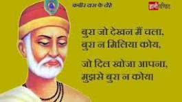

Kabir (1398–1518 AD) was a well-known Indian mystic poet and saint. His writings influenced Hinduism's Bhakti movement, and his verses are found in Sikhism's scripture Guru Granth Sahib, the Satguru Granth Sahib of Saint Garib Das, and Kabir Sagar of Dharamdas.